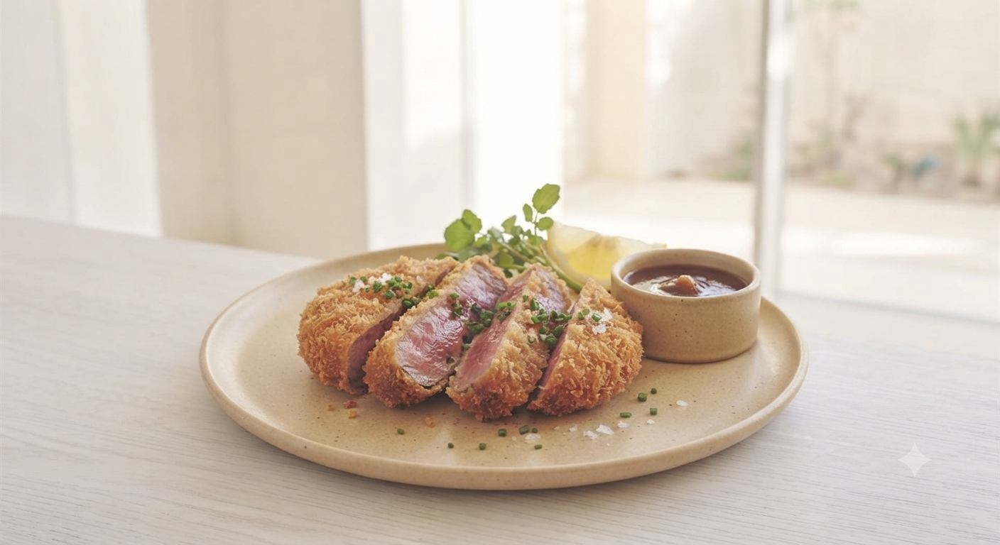
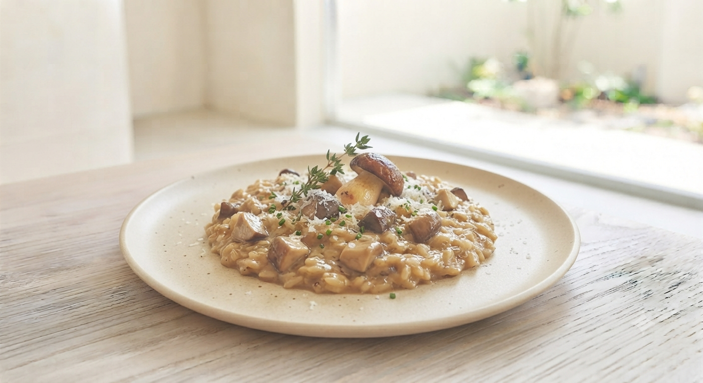
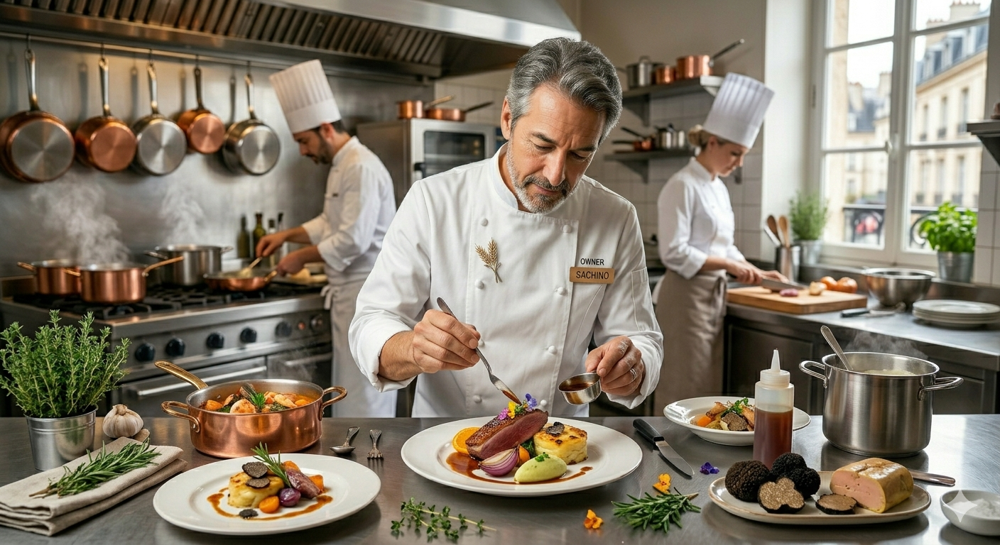

盛岡・内丸 桜山界隈
お祝いも、サク飲みも。あなたの「テーブル」がここにあります。
空席確認・ご予約はこちらFOR YOU
「記念日を祝いたいけど、
高級すぎる店は緊張する…」
「盛岡で、ゆっくり話せる
美味しい隠れ家を知りたい」
「早めの時間から、
質の良い料理で一杯やりたい」
その願い、すべて
元ホテルシェフが作る本格洋食。クリーミーなリゾットや旬の魚介料理を、肩肘張らずにお楽しみいただけます。
「好きなアーティストの曲をかけてほしい」「サプライズを一緒に祝ってほしい」。お客様のわがままに全力で応えます。

※元ホテルシェフ自慢の最高峰の逸品。
一口食べれば、素材の旨みとクリームのコクが口いっぱいに広がります。ホテルで培った伝統の技法と、岩手県産の新鮮な食材が融合した、当店でしか味わえない一皿です。
厳選ワインや珍しい焼酎など、洋食に合う一杯をご提案。
明るい時間からの「自分へのご褒美」も大歓迎です。
〜 旅の合間にちょっと贅沢なひとときを 〜
「岩手・盛岡の魅力を、旅の合間にサクッと堪能してほしい」
そんな想いから、観光や盛岡散策の合間に気軽に立ち寄れる、ちょっと軽めで贅沢な「昼限定のショートランチコース」を只今企画・開発中です！
※開始時期やメニューの詳細はInstagramにて先行発表いたします！
★★★★★
平均満足度 95%以上
「アーティストのLIVE後にお祝いで行き、プレートをお願いしましたが、リクエスト通りに書いて下さり感激です。話の中で好きなアーティストを伝えたらお店のBGMを変えてくれて、岩手の方丸ごと好きになれるお店です！」
「店主さんがとにかく暖かくて居心地のよい空間でした。サプライズのケーキも嬉しかったです！店内のBGMも好きなアーティストにしていただいてテンションが上がりました！」

フランス語で「テーブル」を意味する「たぶる」。
2023年12月、盛岡の桜山にオープンしました。
ホテルシェフとして長年培った技術を、もっと身近に、もっと自由な形で届けたい。そんな想いから始まった小さなお店です。
最大12名という規模だからこそできる、一人ひとりのお客様に寄り添った時間。美味しい料理があるのは当たり前。その先の「楽しかった」「また来たい」という笑顔のために、私たちは今日もテーブルを整えます。
お誕生日、結婚記念日、送別会などでご利用の方へ。
「LPを見た」とお伝えいただければ、
特製メッセージプレート ＆ BGM演出
を無料でプレゼントいたします！
※ご予約時にご希望のメッセージや好きなアーティストをお知らせください。
お一人様から、最大12名の貸切まで。まずはお気軽にご連絡ください。
岩手県盛岡市内丸5−3（月曜定休 / 15:00-23:00）